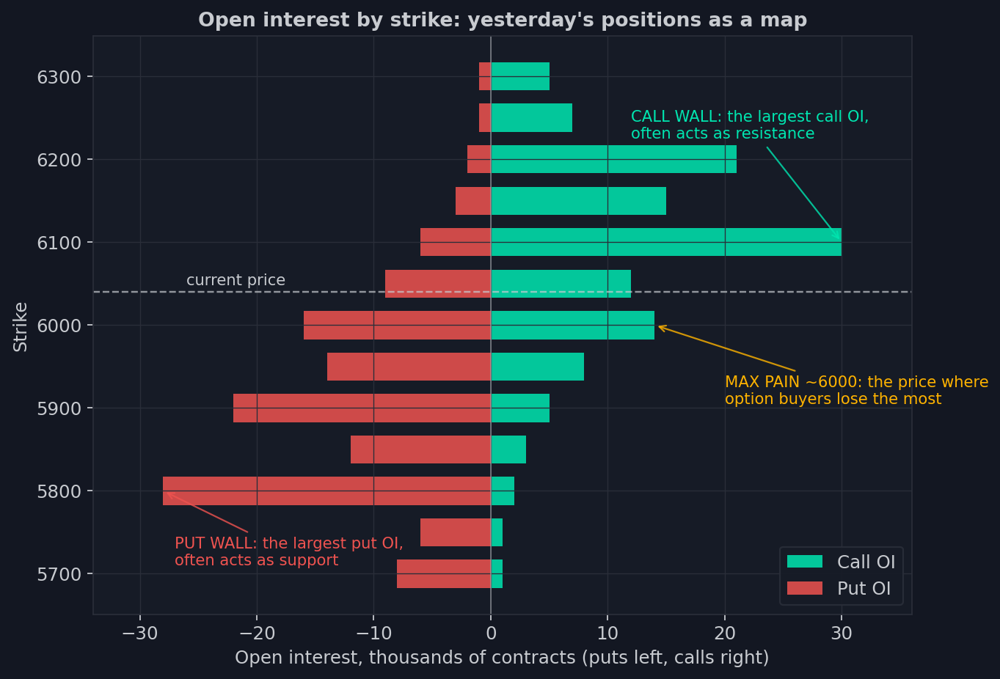
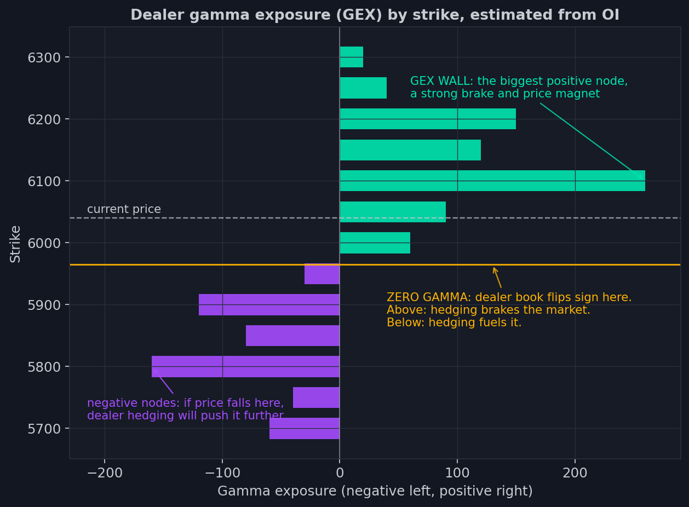

5. La primera era: niveles del open interest
Cada mañana, antes de que abra la negociación, las bolsas publican un resumen del
día anterior: cuántos contratos de opciones quedan abiertos en cada strike. Una
tabla de números. Alrededor del hábito de leerla correctamente ha crecido toda una
industria — servicios de analítica de opciones, boletines matinales con «niveles
para hoy», términos que ya se sabe de memoria uno de cada dos traders: muros,
imanes, el gamma flip. Vamos a entender cómo una tabla de posiciones se convierte
en líneas sobre un gráfico — y por qué funciona.
La materia prima: la foto diaria
El analista de esta era dispone de dos ingredientes. El primero es el open
interest en cada strike: aquellas posiciones acumuladas de la lección 2,
publicadas por la bolsa una vez al día, con el cierre de ayer. El segundo son las
cotizaciones de opciones en vivo, de las que, como sabemos, se extrae la IV y se
calculan las griegas.
Mezcla ambos y obtienes un mapa: qué strikes concentran el dinero gordo y qué
griegas cargan esas posiciones. Todo lo que sigue es interpretación de ese mapa.
El perfil de OI: dónde está sentado el dinero
La forma más directa de mirar la tabla es desplegarla a lo largo del eje de
precios.

Cada fila es un strike. Las barras verdes a la derecha son open interest en calls;
las rojas a la izquierda, en puts. La línea discontinua es el precio actual.
Incluso sin teoría alguna, el mapa se lee solo: los puts se apiñan por debajo del
mercado (seguro contra la caída — recuerda al gestor de carteras de la lección 1),
los calls se sientan por encima (apuestas a un rally). Y lo más revelador: las
posiciones no están repartidas de manera uniforme — el dinero se agrupa en nudos en
los strikes redondos.
¿Por qué un nudo de OI es un nivel en el gráfico de precios? Dos razones tiran en
la misma dirección. Primera: a un strike grande está atado mucho dinero, y cuando
el precio se acerca, sus dueños y vendedores empiezan a actuar — la negociación se
espesa alrededor del nudo. Segunda — y este es el mecanismo principal — en el
strike grande se concentra la gamma, lo que significa que el ajetreo forzoso de los
MM de la lección 4 llega a su pico justo al lado: en modo gamma larga su cobertura
opera contra cada desviación, y el precio se atasca cerca del strike como en miel.
Los muros y el imán
Tres niveles de este mapa se volvieron clásicos; encontrarás sus nombres en
cualquier servicio de opciones — y en nuestro paquete de indicadores.
Call wall — el strike con mayor OI de calls, 6100 en la imagen. Resistencia
clásica: al acercarse desde abajo, el mercado suele frenarse — la cobertura se
espesa, los vendedores de calls defienden el nivel.
Put wall — el strike especular en puts, aquí 5800. Soporte clásico.
Max pain — el strike en el que un cierre infligiría las mayores pérdidas
combinadas a los compradores de opciones (y, en consecuencia, las mayores
ganancias a los vendedores). Aquí ronda el 6000. La observación que dio nombre al
nivel: al vencimiento, el precio acaba sospechosamente a menudo por los
alrededores. No hay misticismo: es el mismo pin de la lección 4 — la cobertura de
las grandes posiciones vendidas arrastra por sí misma el precio hacia los strikes
donde esas posiciones son más gruesas.
Los tres niveles comparten una propiedad que conviene decir en voz alta: trabajan
con más fuerza cuanto más cerca está el vencimiento — porque su fuerza nace de la
gamma, y la gamma, como vimos en la lección 3, se afila hacia el final de la vida
de la opción.
El perfil GEX: de las posiciones a las fuerzas
El perfil de OI responde a la pregunta «dónde está el dinero». El siguiente paso de
la era fue la pregunta «qué fuerzas crea ese dinero». Para responderla, cada
posición de la tabla se multiplica por su gamma y se suma strike a strike — el
resultado es la exposición gamma (GEX): la contribución de cada strike a aquel
libro del MM de la lección 4.

Ahora las barras tienen signo, y el mapa se ha convertido en un pronóstico de
comportamiento. Los nudos verdes son strikes donde la cobertura de los MM frenará
el precio; el mayor de ellos (la GEX wall, aquí 6100) es freno e imán a la vez. Los
nudos violetas de abajo son zonas donde la cobertura, en cambio, empuja el
movimiento: deja que el precio caiga ahí dentro, y las ventas de los MM empezarán a
acelerarlo. Y la línea amarilla es el zero gamma — el precio en el que el signo
de todo el libro se da la vuelta: por encima el mercado vive en el régimen
tranquilo de gamma larga; por debajo, en el nervioso de gamma corta. Un vistazo al
perfil y ya sabes dónde el mercado estará pegajoso y dónde resbaladizo.
Aquí vale la pena pararse a ser honestos sobre en qué descansa este cuadro. El OI
informa de cuántos contratos están abiertos, pero no de quién está en qué lado —
de esa ceguera avisamos ya en la lección 2. Para calcular el libro del MM, el
analista se ve obligado a suponer: normalmente, que los MM están enfrente de los
clientes en cada posición, y que los clientes se comportan de forma típica
(comprando puts como protección, vendiendo calls contra carteras). En un mercado
tranquilo esos supuestos andan cerca de la verdad, y el perfil funciona. Pero es
una estimación construida sobre una conjetura — recuerda esa holgura; jugará su
papel más adelante en nuestra historia.
Expected move: un pasillo hecho de IV
La última pieza de la era es la más simple de todas. De la volatilidad implícita
(lección 2) se sigue directamente qué movimiento considera normal el mercado hasta
el vencimiento: la IV es el ancho de la campana, reformulado como porcentaje
anualizado, y puede proyectarse a cualquier horizonte. El resultado es el
expected move: «hasta el viernes el mercado cotiza más-menos cuarenta puntos».
En el gráfico se dibuja como un pasillo alrededor del precio: los bordes interiores
marcan el movimiento en el que el mercado cree con una probabilidad de unos dos
tercios (una sigma); los exteriores — casi certeza (dos sigmas). Que el precio
salga del pasillo es un acontecimiento: el mercado se mueve más fuerte de lo que
esperaba de sí mismo.
Y ese es todo el arsenal de la primera era: el perfil de OI, los muros, el max
pain, el perfil GEX con el zero gamma, el expected move. Lo empaquetamos en cuatro
indicadores — ya funcionan para los usuarios de ATAS en futuros de CME — y la
próxima lección está dedicada exactamente a eso: qué muestra cada uno, cómo se lee
y qué preguntas surgen sobre él con más frecuencia.
- La materia prima de la primera era: open interest diario por strike más cotizaciones en vivo, de las que se calculan la IV y las griegas.
- Un gran nudo de OI es un nivel en el gráfico: ahí se concentra la gamma, y la cobertura de los MM vuelve el precio pegajoso a su alrededor.
- El trío clásico: call wall (resistencia), put wall (soporte), max pain (imán hacia el vencimiento) - los tres nacen de la mecánica del pin.
- El perfil GEX convierte posiciones en fuerzas, pero descansa sobre un supuesto de quién está en qué lado - el OI no dice nada de eso.